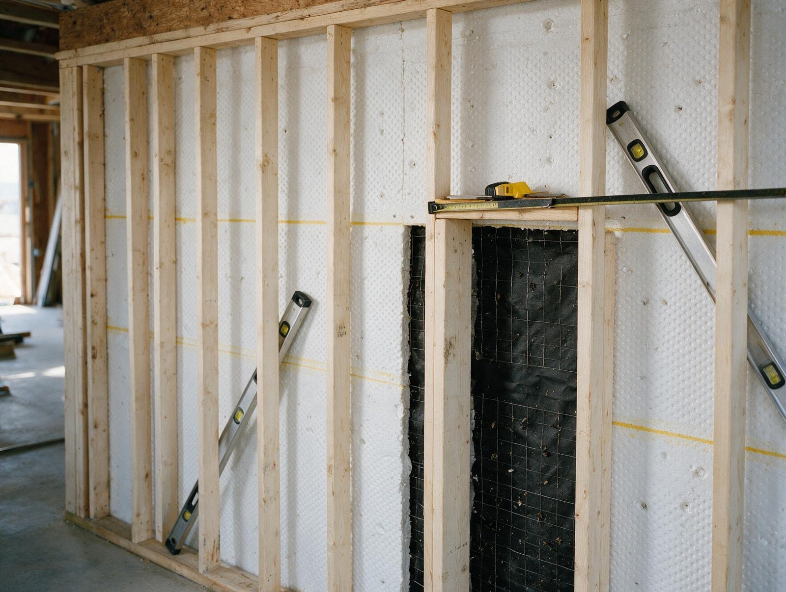
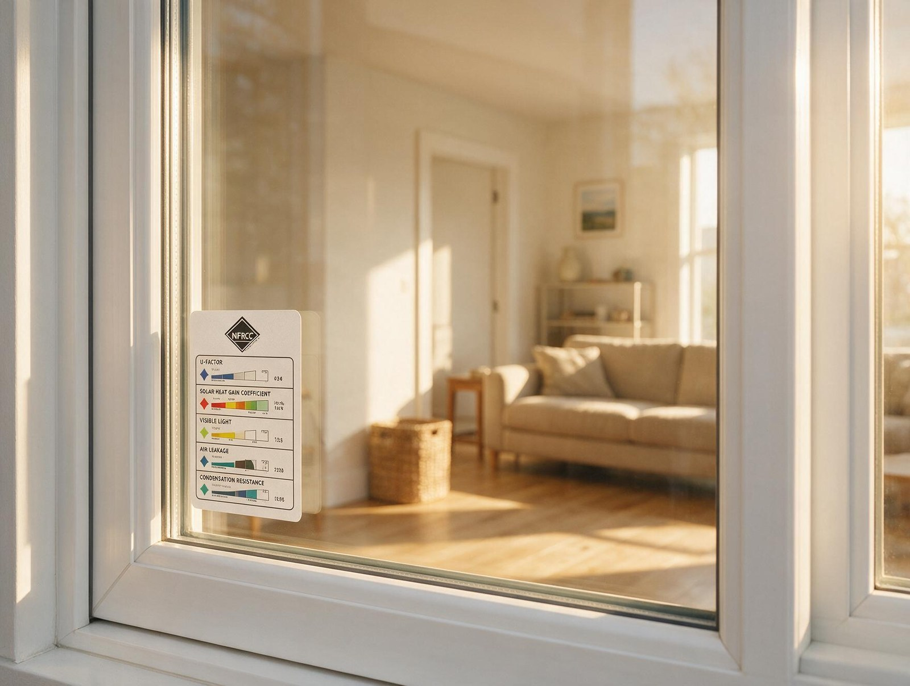

By the Editorial Team | Published: August 2026 | Last Updated: August 2026
Why Manual J Heat Loss Calculations Are the Foundation of Every Correctly Sized Heating System
Manual J is the residential heating and cooling load calculation methodology published by the Air Conditioning Contractors of America (ACCA), and it is the reference standard for sizing furnaces, heat pumps, boilers, and any other residential heating equipment. On the heating side, Manual J produces a design heat loss number in BTU per hour that represents how much heat the house loses at the local 99 percent winter design temperature. That number is what every downstream equipment selection depends on.
Rule-of-thumb sizing (BTU per square foot, matching the old equipment, or picking a stock size) produces oversized systems more often than not, and oversized heating equipment costs more upfront, cycles inefficiently, cuts comfort in the shoulder seasons, and wears out sooner. A proper Manual J calculation costs the designer a few hours and produces sizing that the equipment can actually run efficiently at. This guide walks through what Manual J does, what inputs it needs, and how the calculation feeds equipment selection, duct design, and commissioning.
What Manual J Actually Calculates
Manual J quantifies the rate at which heat leaves the house through the building envelope and through air changes at a specific outdoor design temperature. The calculation breaks down into two main branches: conductive losses (heat transfer through walls, windows, doors, ceilings, and floors) and air-change losses (heat carried out by infiltration and ventilation).
Conductive losses are computed for each surface as the area times the temperature difference divided by the assembly R-value. Air-change losses are computed as air change rate times house volume times temperature difference times a specific-heat constant for air. The two branches sum into the total design heat loss in BTU per hour, which is the number that sizes the heating equipment.
The Design Temperature That Governs the Calculation
Manual J uses a specific outdoor temperature for the load calculation, called the 99 percent winter design temperature. This is the outdoor temperature that the location falls below only 1 percent of annual hours, or roughly 88 hours per year. Design at this temperature means the equipment can meet the load with modest margin during all but the coldest 1 percent of the year.

ASHRAE publishes design temperatures for every U.S. city. For example, southern climates typically show 99 percent design temperatures in the 25 to 40 degree Fahrenheit range, mid-latitude climates in the 5 to 25 degree range, and northern climates below zero. Using the correct local design temperature is a first-order variable in the calculation, and using the wrong temperature (matching a nearby city that is not representative, or picking a colder value out of caution) produces oversized equipment. The framework we use for a specific hot-humid climate market is documented in the Manual J heat loss methodology for accurate residential heating equipment sizing as a worked example from one metropolitan area.
Envelope Inputs the Calculation Needs
A correct Manual J heat loss calculation requires accurate envelope inputs. The designer measures or documents:
- Wall areas by orientation with construction type and insulation R-value (framing, cavity insulation, sheathing, exterior finish).
- Window areas by orientation with U-factor and solar heat gain coefficient from the NFRC label or manufacturer submittal.
- Door areas with R-value from the manufacturer.
- Ceiling area and R-value including whether the attic is vented (typical) or sealed (unvented conditioned space).
- Floor area and R-value based on whether the floor is over a slab, unconditioned crawlspace, unconditioned basement, or conditioned basement.
- Infiltration rate in air changes per hour, either measured through a blower door test or estimated from construction quality categories in Manual J tables.
The inputs need to reflect what is actually built, not the specifications the builder started with. Verified as-built envelope data produces credible load numbers; assumed values produce garbage.
Why Right-Sized Equipment Beats Oversized Every Time
The strongest argument for Manual J is that oversized heating equipment underperforms across every metric:
- Higher first cost because larger equipment costs more.
- Shorter runtimes with more start-stop cycles per season, which reduces seasonal efficiency because cycling losses accumulate at each startup.
- Poor part-load humidity control (relevant because oversized heating equipment usually pairs with oversized AC on split systems).
- Larger temperature swings between cycles because the equipment overshoots then waits longer for the next call.
- Higher wear rates on ignition components (for gas), compressors (for heat pumps), and blowers because the cycle count is higher.
- Reduced equipment lifespan for the same wear reason.
Right-sized equipment runs longer at partial load, hits its rated efficiency more consistently, delivers more stable comfort, and lasts longer. The Manual J calculation is the tool that identifies the right size.

Load Categories and the Line Between Them
| Load component | Typical share of total heat loss | Where the calculation is most sensitive |
|---|---|---|
| Conductive loss through walls | 15 to 25 percent | Wall assembly R-value, wall area accuracy |
| Conductive loss through windows | 15 to 30 percent | Window U-factor, total glazing area |
| Conductive loss through ceiling | 5 to 15 percent | Attic R-value, whether ceiling is under conditioned space |
| Conductive loss through floor | 3 to 10 percent | Floor assembly R-value, condition of space below |
| Infiltration losses | 25 to 40 percent | Air changes per hour, blower door test result if available |
| Ventilation losses | 5 to 15 percent | Whether the house has mechanical ventilation and at what CFM |
How the Calculation Feeds the Rest of the Design
Manual J is the first step in a sequence that includes Manual S (equipment selection to match Manual J load), Manual D (duct design to distribute the airflow that the selected equipment requires), and Manual T (register selection to distribute the airflow to individual rooms). Each downstream step relies on the accuracy of Manual J. An oversized load number produces oversized equipment, which produces oversized ducts, which produces low velocity and poor room-to-room distribution. Under-sized load number produces under-sized equipment that cannot meet peak-hour needs.
The best practice is to run Manual J as a design-time calculation before equipment selection, then run it again as a verification step at commissioning if any envelope changes happened during construction. Retrofit projects benefit from a fresh Manual J even when equipment is being replaced like-for-like, because the envelope may have changed (new windows, insulation upgrades) and the old sizing may no longer fit.
Frequently Asked Questions
Is Manual J required by code on new construction?
Increasingly, yes. The 2018 and later International Energy Conservation Code cycles require Manual J load calculations on new residential HVAC installations in most jurisdictions that have adopted the code, and many state amendments enforce the requirement even where the base code does not. Municipal HVAC permit applications commonly request the Manual J worksheet as part of the submittal package.
How long does a Manual J calculation take?
A residential single-family Manual J calculation typically takes 2 to 4 hours of designer time when the envelope information is documented and the software is set up. Complex homes (multi-zone, unusual geometry, large glazing areas) can take longer. The time investment is small relative to the multi-thousand-dollar equipment decision it informs.
Can Manual J be run without visiting the house?
Yes on new construction where the plans and specifications provide all the envelope information. On existing construction, a site visit is typical because as-built conditions often differ from documentation. A designer working remotely uses photos, videos, homeowner-provided measurements, and sometimes a blower door test result to build the envelope model without setting foot on site.
What is the difference between Manual J and Manual S?
Manual J calculates the heat loss (and heat gain) of the house. Manual S selects the equipment that matches the Manual J load, applying rules like maximum oversizing factors (typically 1.4 for cooling, 1.3 for heating) and equipment-type-specific criteria. Manual J is the load; Manual S is the equipment selection that satisfies the load.
What if the calculation shows a very low heat loss?
Modern high-performance envelopes produce heat losses much smaller than legacy assumptions. It is not unusual for a well-built new home to have a design heating load of 20,000 to 30,000 BTU per hour when older equipment-sizing habits would have specified 60,000 to 80,000 BTU per hour. The correct response is to use the actual Manual J number and choose equipment sized to it, not to override the calculation with a higher assumed value.
How accurate does Manual J need to be for good sizing?
Within 10 to 15 percent of true design heat loss is generally accurate enough for equipment selection because the Manual S oversizing factors provide margin. Errors much larger than that push the equipment into a size step where the mismatch matters. Blower door test data (for infiltration) and NFRC-labeled window specifications reduce the error window substantially.
Are there software tools that automate Manual J?
Yes. WrightSoft, Elite Software, Cool Calc, and CoolCalc HERO are common tools that implement the Manual J methodology and speed up the calculation. The software still requires accurate envelope inputs from the user; garbage in produces garbage out regardless of tool sophistication.
Does Manual J apply to boilers and radiant heating too?
Yes. The heat loss calculation is the same for any heating equipment because it quantifies the load the equipment has to meet. What changes is the equipment selection step: forced-air furnaces and heat pumps size to the load in BTU per hour, while boilers size to the load plus a boiler-specific pickup factor for standby losses and heating-up mass. Manual J produces the load number that both categories use.